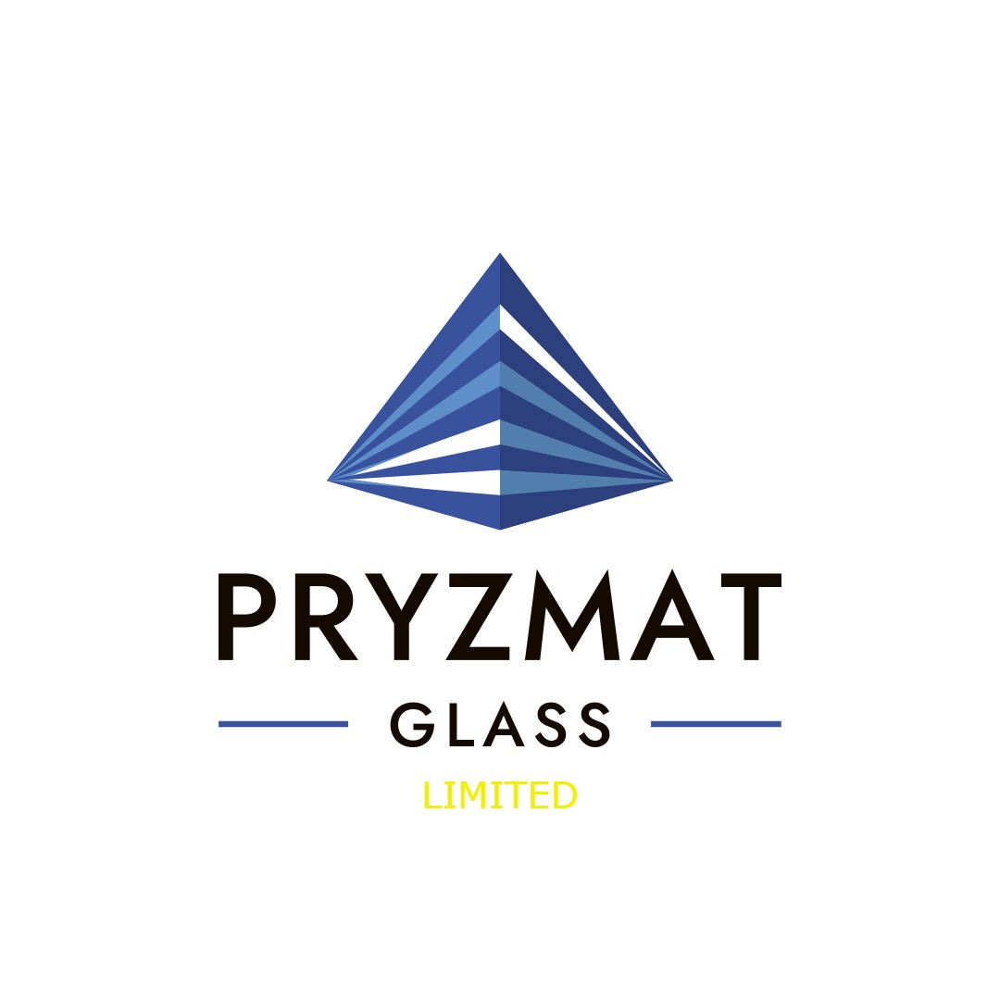
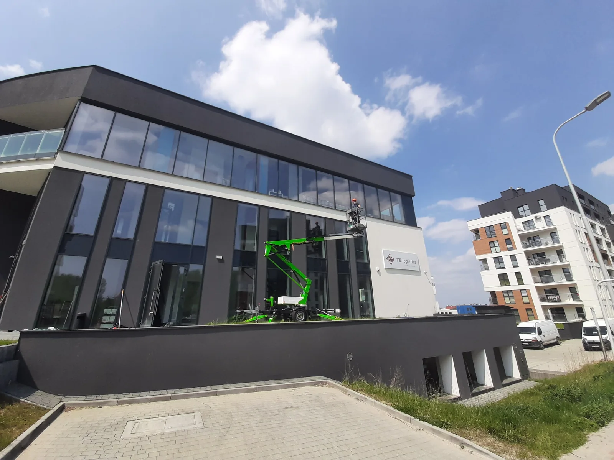
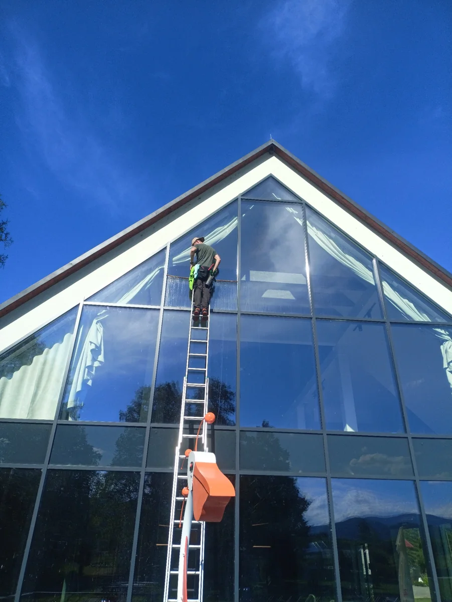
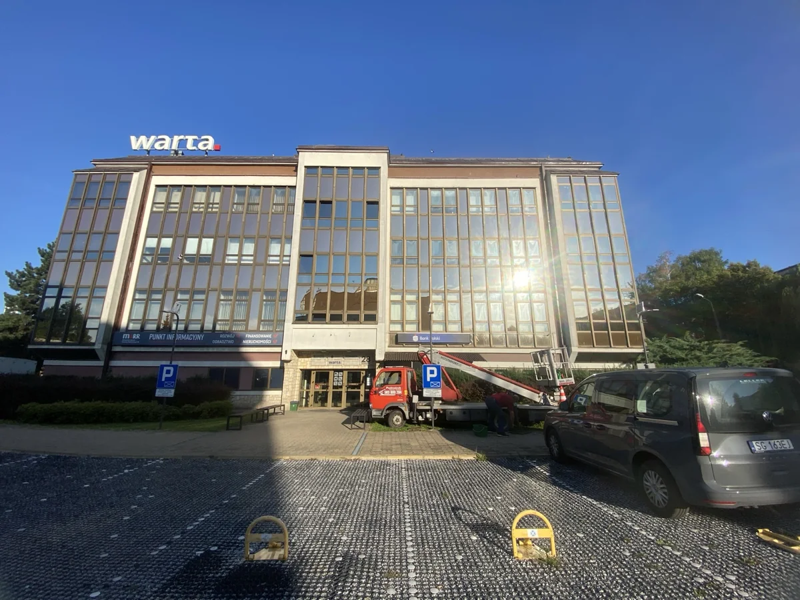
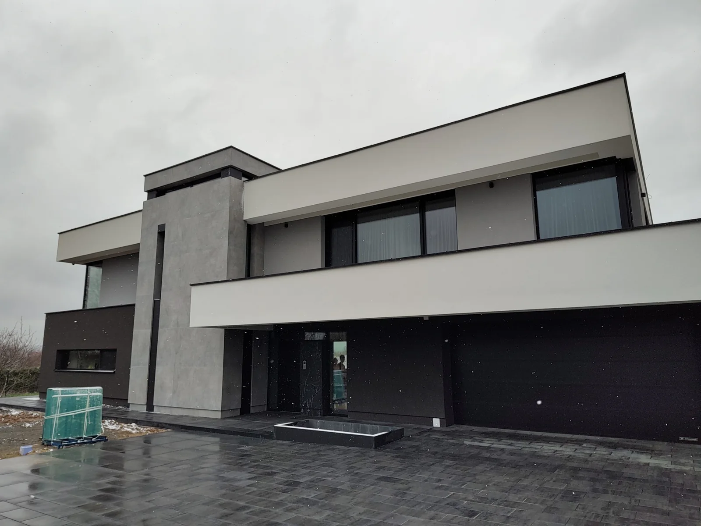
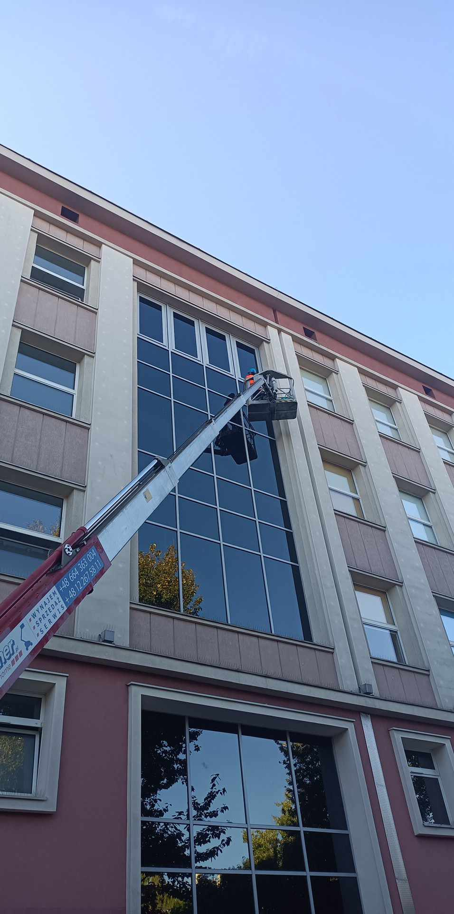
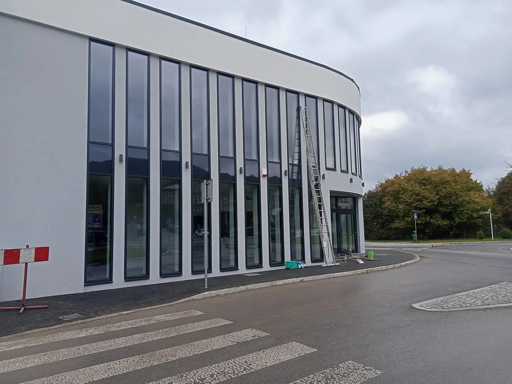

Mycie okien
Domy, biura, witryny oraz duże przeszklenia. Dojazd do miejscowości w promieniu ok. 50 km. Mycie okien →

535 937 367PRYZMAT GLASS • PROFESJONALNE USŁUGI
Mycie okien, elewacji i kostki brukowej oraz kompleksowe sprzątanie dla firm i klientów prywatnych.
Krosno • Jasło • Gorlice • Grybów • Nowy Sącz • RzeszówPRYZMAT GLASS
Realizujemy prace dla klientów prywatnych i firm. Zakres dobieramy do obiektu, dostępu i oczekiwanego efektu — od regularnego sprzątania po mycie dużych powierzchni szklanych.
USŁUGI
Domy, biura, witryny oraz duże przeszklenia. Dojazd do miejscowości w promieniu ok. 50 km. Mycie okien →
Elewacje tradycyjne i szklane, także wymagające dostępu na wysokości. Zapytaj o mycie elewacji →
Podjazdy, chodniki, tarasy i powierzchnie wokół budynków. Dojazd do miejscowości w promieniu ok. 50 km. Mycie kostki brukowej →
Liście, osady i zanieczyszczenia ograniczające odpływ wody. Dojazd do miejscowości w promieniu ok. 50 km. Czyszczenie rynien →
Porządkowanie obiektów po budowie, wykończeniu i remoncie. Większe realizacje również poza Krosnem. Sprzątanie pobudowlane →
Regularna, cykliczna obsługa domów, mieszkań, biur i firm w Krośnie.
Sprzątanie Krosno →
REALIZACJE
Wybrane realizacje Pryzmat Glass — od domów po obiekty komercyjne i prace na wysokości.






REALIZACJE W NOWYM SĄCZU
W Galerii Sandecja wykonaliśmy mycie dużej witryny lokalu handlowego. Na stronie lokalnej opisujemy także prace w Galerii Trzy Korony, Galerii Europa II i przy ul. Węgierskiej.
Mycie okien i witryn w Nowym Sączu →ZOBACZ NAS PRZY PRACY
Prawdziwy materiał z realizacji — zobacz, jak pracujemy przy myciu okien i przeszkleń.
DLA FIRM I DOMÓW
Witryny, biura, przeszklenia, elewacje oraz cykliczna obsługa.
Okna, elewacje, kostka brukowa oraz regularne sprzątanie domu.
OPINIE KLIENTÓW W GOOGLE
Sprawdź, jak oceniają naszą pracę osoby, które skorzystały z usług mycia okien i przeszkleń.
Usługa wykonana rzetelnie, w umówionym terminie, dokładnie, pełen profesjonalizm. Polecam!
Przyjemna i jasna współpraca. Jakość wykonanej usługi na 1000%! Polecam firmom oraz osobom prywatnym - będziecie zadowoleni 👌
Bardzo profesjonalne mycie okien, polecam serdecznie :)
Polecam Pana Bartosza, wielokrotnie korzystałem z jego pomocy w różnych rejonach Małopolski. Usługi zawsze realizowane są sprawnie i z dbałością o szczegóły. Zdecydowanie warto skorzystać !
Z całego serca polecam firmę Pryzmat Glass! 😊
Do umycia mieliśmy naprawdę spory dom o powierzchni 460 m². W ciągu jednego dnia chłopaki wykonali ogrom pracy – dokładnie umyli wszystkie okna od wewnątrz i na zewnątrz, rolety, moskitiery, a także świetlik oraz okna na antresoli znajdujące się na wysokości około 6 metrów.
Jesteśmy pod ogromnym wrażeniem ich pracowitości, zaangażowania, dokładności i profesjonalnego podejścia. Pracowali sprawnie, z pełnym zaangażowaniem, a efekt końcowy przerósł nasze oczekiwania. Wszystko lśni i wygląda jak nowe!
Widać, że chłopaki wkładają w swoją pracę dużo serca i naprawdę zależy im na zadowoleniu klienta. Do tego bardzo sympatyczna ekipa i świetny kontakt.
Dziękujemy za kawał naprawdę dobrej roboty! Na pewno jeszcze skorzystamy z Waszych usług. Polecamy z czystym sumieniem! ⭐ ⭐ ⭐ ⭐ ⭐
Opinie także w Oferteo: 5,0 ★ · 14 opinii klientów
Zobacz opinie w Oferteo →OBSZAR DZIAŁANIA
Obsługujemy zlecenia na wskazanym obszarze i w jego okolicach. Sprawdź lokalne oferty: mycie okien Krosno → i mycie okien Nowy Sącz → oraz mycie okien Rzeszów →. Przy większych realizacjach zakres dojazdu ustalamy indywidualnie.
ZGŁOSZENIE ONLINE
Wypełnij formularz — oddzwonimy lub odpowiemy na e-mail. Nie musisz otwierać programu pocztowego.
BEZPŁATNA WYCENA
Opisz obiekt i zakres prac. W przypadku większych realizacji możesz przygotować zdjęcia — ułatwią wstępną ocenę zlecenia.